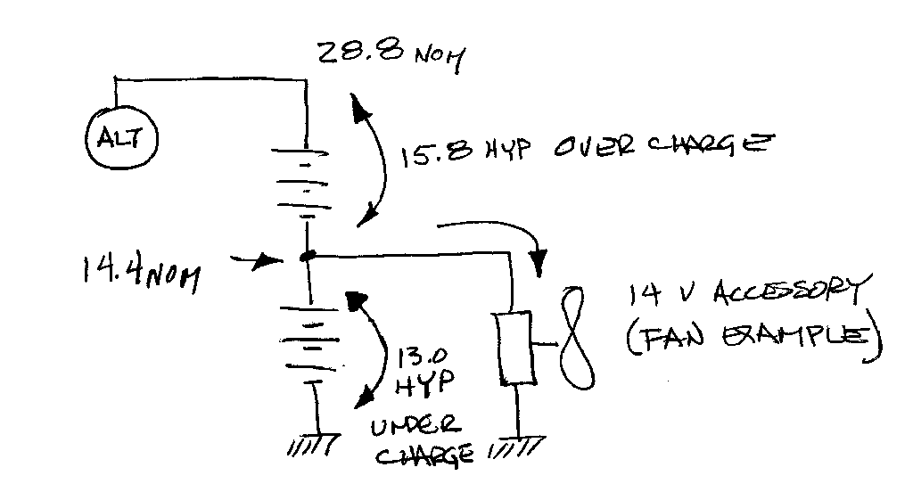

How not to tap a 24-volt battery to supply 12-volts
Several times a year we receive questions about tapping the center of two 12-volt
batteries in a 24-volt system to supply 12-volts to some accessories. A schematic
of this scheme is illustrated below:

This seems like a perfectly reasonable thing to do. After all, when the system
is operating normally, one can place a voltmeter at the jumper between the two
batteries and the instrument will indicate one-half nominal system voltage. Why not
just hook your 12/14-volt accessories to this tap?